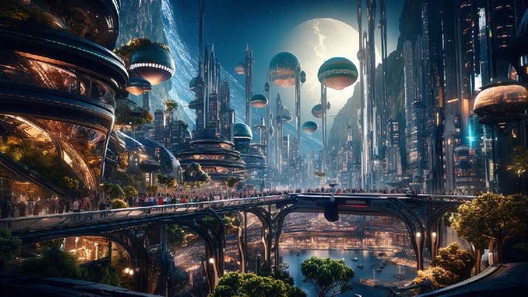
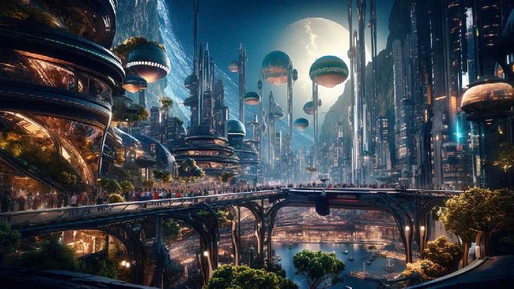
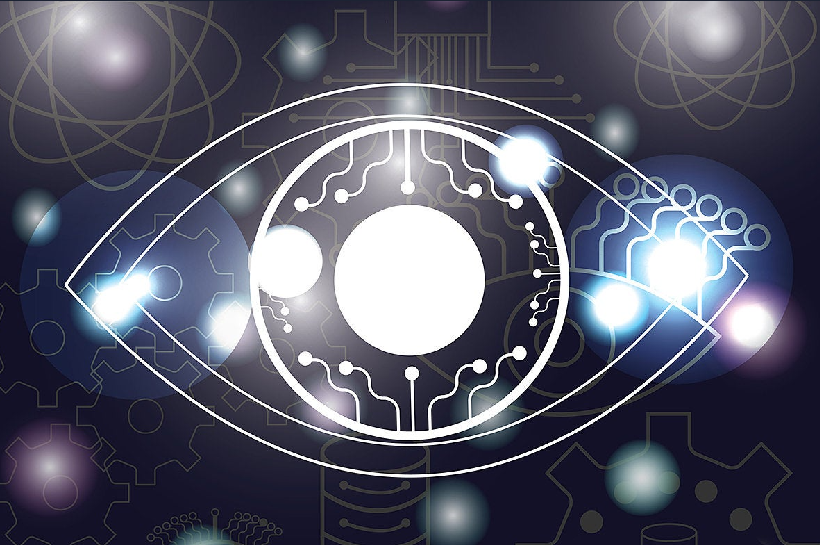

Urban tech solutions


 

Our Vision
"Empowering Cities to Become Resilient, Inclusive, and
Efficient"
Our vision is one of connected cities where technology works seamlessly in the background, enhancing daily life for every resident. We see a future where smart infrastructure and data-driven decisions create a cleaner, safer, and more dynamic urban environment. By leveraging advancements in AI, IoT, and big data, we provide cities with tools to solve complex problems and improve urban experiences. Urban Tech Solutions aims to empower communities, making them more adaptable and inclusive, where everyone—from commuters to business owners and families—benefits from a city designed with their needs in mind. Our focus on sustainability and resilience ensures that these cities will thrive, even in the face of future challenges.
Our work spans multiple aspects of city life, focusing on sustainable growth and intelligent resource management. By creating smart infrastructure and digital solutions, we aim to make cities more efficient, interconnected, and adaptable. Through collaboration with government agencies, local communities, and private businesses, Urban Tech Solutions strives to create a seamless urban experience that puts the well-being of residents at the center of all initiatives. We believe in cities that are more than livable—they should be vibrant, sustainable hubs that evolve with their communities.
We are committed to pushing the boundaries of what urban technology can achieve. From AI-enhanced traffic management systems that reduce congestion to real-time environmental monitoring tools, our products bring innovative solutions to the everyday challenges faced by urban populations. At Urban Tech Solutions, we envision a future where cities are not just places to live but thriving, progressive environments that uplift and inspire everyone who calls them home.
Our Goal
"Transforming Cities Through Innovation"
At UTS, our goal is simple: to create smarter, more sustainable urban spaces. By leveraging cutting-edge technology, we aim to address the challenges cities face today—from traffic congestion to energy inefficiency—and provide innovative solutions that improve daily life for urban residents. We believe that by integrating advanced technologies into city infrastructure, we can create a better quality of life for everyone.

Our work spans multiple aspects of city life, focusing on sustainable growth and intelligent resource management. By creating smart infrastructure and digital solutions, we aim to make cities more efficient, interconnected, and adaptable. Through collaboration with government agencies, local communities, and private businesses, Urban Tech Solutions strives to create a seamless urban experience that puts the well-being of residents at the center of all initiatives. We believe in cities that are more than livable—they should be vibrant, sustainable hubs that evolve with their communities.
By prioritizing both people and the planet, we are committed to creating urban environments that promote sustainability without compromising on quality of life. Our vision is one where cities aren't just places to live, but thriving, sustainable ecosystems that help build a brighter future for generations to come.